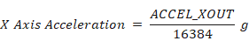
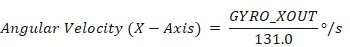
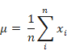
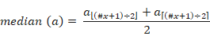
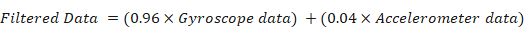
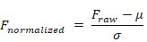
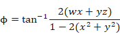
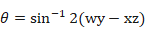
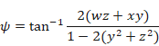

A Framework for Sensor-Based Hand Gesture Classification using Machine Learning
Chapter 1
Introduction
1.1 Motivation and goal
In this world of computers, machines have become an integral part of human day to day work. A field of device designing has been introduced named Human Computer Interaction (HCI). Human-Computer Interaction (HCI) is a multidisciplinary field of study focusing on the design of computer technology and, in particular, the interaction between humans (the users) and computers. While initially concerned with computers, HCI has since expanded to cover almost all forms of information technology design [1]. Under this field, human behavior and machine control researches have been conducted extensively and such devices are being developed more often than ever.
Human interaction is based upon communication systems. It enables us to exchange ideas, feelings and emotions towards other human beings. This communication is done not only when we speak to one another but can also be formulated and transferred when we walk, run, play or even sit together. Human communication of interactions can be classified into two categories: verbal and non-verbal. The verbal communication is the combination of speaking and listening in a language mutually understandable. It can be done face to face with another person or even via phone, radio, television etc. The non-verbal way of communication consists of a person’s body language, gestures, postures and even with writings or pictures.
“Gesture” means the movement of different limbs of body such as - hands, head, arm, body and even facial expression. This is very common form to express ideas, emotions and opinions. “Recognition” denotes to the identification and classification of different objects. So gesture recognition is the act of identifying human gestures. A computer based system with gesture recognition capability can recognize human gestures and perform certain commands or tasks accordingly [2].
With the help of development in machine learning algorithms and various tools, many companies like Google, Amazon have designed their products compatible to natural language. A very common of natural language is hand gestures which have been common in societies all over the world regardless of language and cast. There are fundamental differences in sign languages because of the language itself. But some basic hand gestures have always been common in different societies.
In this project we aim to develop a sensor based gesture recognition framework which can detect human hand gesture in real time and also implement this framework in HCI and automation. We aim to classify 14 different hand gestures from the data of three different sensors (flex sensor, 3-axis accelerometer, 3-axis gyroscope). Such gesture recognition is a vital step for controlling several computer based utilities.
1.2 Approaches to hand gesture recognition
To design a HCI based system, we have to dig into the methods of detecting human communication methods. Also, in several scenarios, the design is based on different activity of human which is part of another field of study named Human Activity Recognition (HAR). While HCI design can have different approaches, gesture detection can have the basic two approaches.
1.2.1 Computer vision based system
This field has been improved drastically in past few years. In vision based approach, the users do not need to wear any extra devices. This technique is very natural to use for the users because human and computer will communicate directly [2]. Hand images are captured by the cameras and using the vision based techniques, captured images can be processed and analyzed. Different types of cameras are used: monocular, fish eye, time of flight and infrared cameras etc. [3] The representations of alphabets and numbers are easily recognized with the vision based approach. The illumination change, background cluster, partial or full occlusions are the several challenges to be addressed.
1.2.2 Sensor based system
Sensor based systems for hand gesture recognition are popular nowadays due to the complication of camera based systems in activity recognition. There are mainly two types of sensor based systems as shown below.
(i) Dedicated device: This type of devices are action based. For example, a data glove or a gaming remote. These devices are dedicated to that particular tasks they were meant to do. For example a data glove can contain several sensors based on the use and this gloves are very accurate to perform the task for example certain hand gestures detection. But to use this gloves in any other task, certain level of modification is required. Same for a gaming remote. This has been very popular in TV gaming consoles. Users can make certain game commands holding the remote in their hand and making gestures with it.
(ii) General purpose device: This type of devices generally have wide range of utilities. For example, smartphones and smartwatches are such devices. They are not dedicated to a particular tasks. Rather they can be programmed to do various tasks based on available sensors. The differences between these two varieties are based on the number of sensors and utilities. For example, an Apple smart watch can be used as a digital watch and along with showing time, it can perform certain movement detection as it contains sensors to do so. But a data-gloves or a gaming remotes are designed to perform a particular task but cannot be used all day for any general purpose work.
1.3 Challenges in sensor based gesture recognition
There are several challenges to consider before applying sensor based gesture recognition method. These challenges are discussed in the following sections.
1.3.1 Type of gesture
There are mainly two types of hand gestures based on detection mechanism:
(i) Static Gesture: This type of hand gestures are based on static orientation of hand. For example, to express ‘Stop’ we generally show palm of our hands vertically. The static position of the hand expresses the person in front to stop. Static gestures are comparatively easier to detect as over time the sensors show nearly similar values.
(ii) Dynamic Gestures: This type of hand gestures are based on certain hand movements. For example, waving a hand attracts the viewer’s attention. Dynamic hand gestures are relatively more complex to detect. Here, several time windows must be used to cut the relevant portion of the sensor signal as gestures. For different users this window varies and so alongside the raw data, different time domain, frequency domain and temporal domain data must be considered. The window for the gesture must be taken according to the continuous gesture length. The data processing in this type is more complex. Various real life gestures are of this kind.
So, here the challenge is to develop algorithm to work with any single type of hand gestures or combine the both detection method to work with both type of gestures.
1.3.2 Appropriate sensors
There are different types of sensors available for detecting hand gestures. Another challenge is to select the appropriate sensor or sensors for detecting the selected gestures successfully. For detecting hand gestures, there are several sensors which detect various features. For example, flex sensors can detect bend angles based on resistive change. Accelerometer can detect acceleration is different axis. Gyroscope can detect angular velocity along with different axis. Moreover, magnetometer can also be used in different cases to detect orientation based on earth’s magnetic field values. The last three sensors are sometimes used together to detect the orientation of an object in 3D plane. Another way of measuring hand gesture is to use EMG sensors. EMG sensors can detect muscle signals based on different hand gestures. So, a big challenge is to select appropriate sensor based on the type of hand gesture and the application.
1.3.3 Dataset
Choosing and working with appropriate dataset is another challenge. There are many datasets available online for free in different website. For example: UCI HAR dataset, UCI HAPT Dataset etc. These online available datasets are generally made with data collected in lab environment. So, the dataset chosen to work with must have diversity. That means different age groups and genders must participate in the dataset making.
Another approach can be making our own dataset using a certain device. This approach is generally preferred for a rather non-conventional devices like data glove. But making a dataset is a tough job as we need to assemble participants from different age groups, genders to make a diversified dataset. Another important factor is the number of participants. A good number of participants are needed to create a good and reliable dataset but the number is not defined; the more the better. The data must be taken by a stable device under stable condition from the participants. Moreover, before actually using these data to train a model, data must be pre-processed.
1.3.4 Appropriate training model
Finding appropriate training model is another challenge. There are a number of training models to use. For example, linear regression, logistic regression, support vector machine (SVM), K-nearest neighbors (KNN), decision trees, random forests (RnF) etc. Finding appropriate model well fitted to show good results is very important.
In a famous paper published in 2001, Microsoft researchers Michele Banko and Eric Brill showed that very different Machine Learning algorithms, including fairly simple ones, performed almost identically well on a complex problem of natural language disambiguation once they were given enough data [4].
Generally, such large and reliable datasets are not available from every type of work. So, algorithms play a vital role in achieving good prediction. There is no definite way to say beforehand that a certain algorithm will perform best for a dataset. This can be determined after tuning various algorithms and comparing the results.
1.4 Project overview
Chapter 1 provides a brief introduction to the concepts of human computer interaction systems, where intentions and motivation of this research are clarified. Hand gesture detection approaches have been shown with pros and cons. Moreover, various challenges in this research has also been discussed. Finally, an overview of basic requirements of this project has been given.
Chapter 2 discusses other studies and related works in the area of hand gesture recognition. Firstly, it describes dedicated device based machine learning techniques. Secondly, a comparison of different approaches proposed by various researchers along with accuracies of various sensors has been shown for data glove of similar form. Finally, problems related to previous works have been discussed.
Chapter 3 provides a theoretical overview and work flow of this project work including sensor description, choice of sensor type and position, etc. Different approaches solving our gesture detection problems and their comparison are also shown. The reasons for adapting different approaches also explained. Following this, types of features and several machine learning techniques were discussed in brief.
Chapter 4 discusses our research methodology. Firstly a basic structure of the system has been given. Secondly, feature extraction and selection technique have been described. Finally, our proposed method was specified for the precise classification of 14 different hand gestures are shown.
Chapter 5 provides the results obtained from the investigation of our proposed method. A comparison is also given showing the accuracy of our proposed method with traditional classifiers. Finally, a discussion and detailed analysis of our proposed method have been given.
Chapter 6 draws conclusion of this work and provides future improvement scopes in this research.
Chapter 2
Related work
Mäntyjärvi et al.[5] have used accelerometer sensor to recognize DVD player gesture. They focused on discrete gesture command. Discrete Hidden Markov Models are applied here. For a set of eight gestures, each trained with two original gestures and with four noise-distorted duplicates, the average recognition accuracy was 98%, cross-validated from a total data set of 240 gestures. A device with 3 axis accelerometer is used to capture the gesture. The device is connected to a computer via serial communication. The computer recognizes the signal and outputs certain action. They used a certain button to record the discrete signals.
Figure 1.1: Eight different DVD player control gestures
According to the work of Schlömer et al.[6], a accelerometer based gaming remote (wiimote) is used to recognize 5 gaming gestures separately. There were 6 participants; each performed the five gestures 15 times each. The results for the five gestures were Square = 88.8%, Circle = 86.6%, Roll = 84.3%, Z = 94.3%, and Tennis = 94.5%. The process of recognition contains filtering, quantization, HMM and Bayes classifier.
Figure 1.2: Five reference gaming gestures
In the work of Roy et al.[7] a technique of combining electromyography and accelerometer data is used to predict hand gestures. They worked on two movements - palm open and close. MPU6050 accelerometer sensor and used a custom-made EMG sensor along with a microcontroller (atmega328p) are used to capture and relay the signals via Bluetooth to the computer.
Zhang et al.[8] have used a fusion of a three-axis accelerometer (ACC) and multichannel electromyography (EMG) sensors. The start and end points of meaningful gesture segments are detected automatically by the intensity of the EMG signals. A decision tree and multi-stream hidden Markov models are utilized as decision-level fusion to get the final results.
Figure 1.3: Block diagram of the proposed framework by Zhang et al.
For sign language recognition (SLR), experimental results on the classification of 72 Chinese Sign Language words demonstrate the complementary functionality of the ACC and EMG sensors and the effectiveness of this framework. The overall recognition accuracy was 90.2%.
Figure 1.4: 3D accelerometer and EMG sensor placement
In the work of Amma et al.[9] three gyroscopes and three accelerometers are used to measure hand motion. Data is sent wirelessly to the computer via Bluetooth. HMMs are used for character recognition and concatenated character models are used for word recognition. As features normalized raw sensor signals are applied. They used discrete gestures. The text is written into the air via character gestures. A wearable input device (glove) is used which enables the user to input text into a computer. An average writer dependent character recognition rate of 94.8% and a writer independent character recognition rate of 81.9%.
Figure 1.5: Data glove used in air-writing.
Pittman et al.[10] this paper used Doppler effect in sound wave to recognize two types of single hand gestures, swipes and taps, in four directions: left, right, towards the monitor, and away from the monitor; in total 8 gestures.
Figure 1.6: Gestures used in Doppler Effect based detection.
They used two microphones and more than two speakers to capture the reflected sound. To segment gestures, we looked at periods of motion that stopped for 200 ms. To prevent any meaningless input, we set a minimum gesture duration at 150 ms. The features extracted from the detected gestures passed through a Random Forests classifier generated using WEKA. The overall accuracy was 93.8%.
Uddin et al.[11] used skin detection algorithm is used to detect the hand correctly. The model detects the skin color of every type using 𝑌𝐶𝐵𝐶𝑅 algorithm, Bag of words model is used for feature extraction and Support Vector Machine (SVM) for training and evaluation. To validate the model, a custom made dataset is made. The average accuracy is 86%.
Chapter 3
Theoretical Background
This project addresses a method to correctly classify human hand gestures using accelerometer, gyroscope and flex sensors. The accelerometer sensor measures acceleration in three axis (x, y, z). The gyroscope sensor can measure angular velocity in three axis (x, y, z). Both accelerometer and gyroscope sensor data have been used to calculate the three dimensional orientation of hand. The flex sensors are used to measure the bending of the fingers. A microcontroller placed on the glove interfaces with these sensors, collects data from them sends the data to a computer through the serial interface. All the sensors are placed on the data collection glove in a manner so that they can provide measurement on both 3D orientation of the hand and finger bending.
3.1 Sensor Description
3.1.1 MPU-6050 (Accelerometer and Gyroscope)
The MPU-6050 is an integrated 6 axis motion tracking device that combines a 3-axis Accelerometer, 3-axis Gyroscope and a Digital Motion Processor (DMP). The sensor can also accept output from an external 3-axis Compass sensor or Magnetometer to provide a 9-axis Motion Fusion output. Hence the MPU-6050 is also called a 9-DOF sensor [12].
Figure 3.1: Pinout of MPU-6050
Communication with all registers of the device is performed using I2C interface at 400 kHz. Table 3.1 adapted from the MPU-6050 datasheet provides the basic information about the sensor [13].
Table 3.1: MPU-6050 Specifications
|
Parameters |
Values |
|
Operating Voltage |
2.375V - 3.46V |
|
Serial Interface |
I2C |
|
ADC Resolution |
16 bits |
|
Accelerometer ranges |
±2g, ±4g, ±8g, and ±16g |
|
Gyroscope ranges |
±250, ±500, ±1000, and ±2000°/sec (dps) |
(i) The Accelerometer: The MPU-6050 contains a 3-axis 16 bit accelerometer sensor. Consistent with Newton’s second law of motion, it measures the acceleration force in that is applied to a device on all three physical axes (x, y, and z) including the force of gravity, where. The fundamental principle of operation behind the accelerometer based on Microelectromechanical Systems (MEMS) is the displacement of a small proof mass etched into the silicon surface of the integrated circuit and suspended by small beams[39].
The on board accelerometer of the sensor is configured by writing to the ACCEL_CONFIG (Address: 1C) register shown in Table 3.2. One important parameter of the accelerometer is the full scale range of the sensor. Full scale range can be set from ±2g to ±16g by writing to the AFS_SEL bit of the configuration register (ACCEL_CONFIG). Lower range gives higher sensitivity and higher range gives lower sensitivity. AFS_SEL selects the full scale range of the accelerometer outputs according to Table 3.3.
Table 3.2: ACCEL_CONFIG Register
|
Bit 7 |
Bit 6 |
Bit 5 |
Bit 4 |
Bit 3 |
Bit 2 |
Bit 1 |
Bit 0 |
|
XA_ST |
YA_ST |
ZA_ST |
AFS_SEL [1:0] |
- |
|||
Table 3.3: Full Scale Range Selection and Sensitivity
|
AFS_SEL |
Full Scale Range |
LSB Sensitivity |
|
0 |
±2g |
16384 LSB/g |
|
1 |
±4g |
8192 LSB/g |
|
2 |
±8g |
4096 LSB/g |
|
3 |
±16g |
2048 LSB/g |
The most recent measurements of the accelerometer are stored in ACCEL_XOUT_H, ACCEL_XOUT_L, ACCEL_YOUT_H, ACCEL_YOUT_L, ACCEL_ZOUT_H, and ACCEL_ZOUT_L registers (Address: 3B - 40). The data within the accelerometer sensors’ internal register set is always updated at the Sample Rate selected. To get the actual measurement these 16 bit data needs to be divided by the LSB Sensitivity corresponding to the selected Full Scale Range. If a Full Scale range of ±2g is selected then the actual accelerometer reading is given by the following equation [20].

(ii) Gyroscope: The MPU-6050 contains a 3-axis 16 bit gyroscope sensor. A gyroscope identifies up/down, left/right and rotation around three axes (x, y, z) for more complex orientation details. It can measure angular velocity of the sensor in three axis. By integrating the angular velocity with respect to time gives the angular displacement. The gyroscopes inside MPU-6050 don’t use wheels and gimbals like the traditional mechanical ones. Instead, they are MEMS (Micro-Electro-Mechanical Systems) gyroscopes, a smaller version of the concept embedded on an electronics board.
The on board gyroscope of the sensor is configured by writing to the GYRO_CONFIG (Address: 1B) register shown in Table 3.2. Like the accelerometer an important parameter of the gyroscope is the full scale range of the sensor. Full scale range can be set from ±250°/sec to ±2000°/sec by writing to the FS_SEL bit of the configuration register (GYRO_CONFIG). Lower range gives higher sensitivity and higher range gives lower sensitivity. FS_SEL selects the full scale range of the gyroscope outputs according to Table 3.4.
Table 3.4: GYRO_CONFIG Register
|
Bit 7 |
Bit 6 |
Bit 5 |
Bit 4 |
Bit 3 |
Bit 2 |
Bit 1 |
Bit 0 |
|
XG_ST |
YG_ST |
ZG_ST |
FS_SEL [1:0] |
- |
|||
Table 3.5: Full Scale Range Selection and Sensitivity
|
AFS_SEL |
Full Scale Range |
LSB Sensitivity |
|
0 |
± 250 °/s |
131 LSB/°/s |
|
1 |
± 500 °/s |
65.5 LSB/°/s |
|
2 |
± 1000 °/s |
32.8 LSB/°/s |
|
3 |
± 2000 °/s |
16.4 LSB/°/s |
The most recent measurements of the gyroscope are stored in GYRO_XOUT_H, GYRO_XOUT_L, GYRO_YOUT_H, GYRO_YOUT_L, GYRO_ZOUT_H, and GYRO_ZOUT_L registers (Address: 43 - 48). The data within the gyroscope sensors’ internal register set is always updated at the Sample Rate selected. To get the actual measurement these 16 bit data needs to be divided by the LSB Sensitivity corresponding to the selected Full Scale Range. If a Full Scale range of ± 250 °/s is selected then the actual gyroscope reading is given by the following equation.

3.1.2 SEN-10264 Flex Sensor
A Flex Sensor is a variable resistance. The resistance of the flex sensor changes as the sensor is flexed. The SEN-10264 Flex Sensor used in this project is 2.2” flex sensor which is used to measure the flexing of fingers. As the sensor has a variable resistance it can be used in a voltage divider circuit to produce variable voltage output which can be then detected by the microcontroller [14]. The basic flex sensor circuit is shown on Figure 3.3 [15].
Figure 3.3: Basic flex sensor circuit
Table 3.6: Electrical specifications of the sensor
|
Parameters |
Values |
|
Flat Resistance |
10k Ohms ±30% |
|
Bend Resistance |
Minimum 2 times greater than the flat resistance at 180° pinch bend |
3.2 Microcontroller Description
The Microcontroller used in this project is an Esp32 (low-power system on a chip microcontrollers with integrated Wi-Fi and dual-mode Bluetooth) based development board called DOIT Esp32 DevKit v1. This microcontroller was chosen instead of traditional AVR microcontrollers due to its higher ADC resolution, higher clock speed and wireless capabilities.
DOIT Esp32 DevKit v1
The DOIT Esp32 DevKit v1 is Esp32 based development board with WiFi, Bluetooth, Ethernet and Low Power support. The general specifications of the board is given in Table 3.7
Figure 3.4: Pinout diagram of DOIT Esp32 DevKit v1
Due to the higher clock speed and memory of the board this board can operate significantly faster than Arduino based microcontrollers. A speed test was performed between DOIT Esp32 DevKit v1 and an Arduino Uno board. The elapsed time to calculate median of 100 ADC values and mean of 1000 ADC values was used to compare the processing speed of both devices. The result shown in Figure 1.8 shows a significant difference in speed.
Table 3.7: General Specifications of DOIT Esp32 DevKit v1
|
Parameters |
Values |
|
Operating Voltage |
3.3 V |
|
Clock Speed |
240 MHz |
|
Flash Memory |
4 MB |
|
SRAM |
520 KB |
|
Digital I/O Pins (DIO) |
25 |
|
Analog Input Pins (ADC) |
6 |
|
ADC Resolution |
32 bits |
|
WiFi |
IEEE 802.11 |
Figure 3.5: Speed comparison of two mcu for two different operation
The DOIT Esp32 DevKit v1 also has a 12 bit ADC resolution compared to 10 bit resolution of the Arduino Uno. The relation between minimum measurable voltage by a microcontroller and the ADC resolution is given by the following equation.
Arduino Uno has operating voltage of 5 volt and minimum measurable voltage is 4.88 mV whereas DOIT Esp32 DevKit v1 has operating voltage 3.3V and minimum measurable voltage is 0.806 mV.
3.3 Dataset Description
A group of 30 male and female volunteers aging between 21-32 years performed 14 hand gestures: come here, go away, fist, fingers crossed, cash, one, two, three, four, five, excellent, stop, thumbs up and thumbs down. 10 data were collected for each gestures using the data glove mounted with 5 flex sensors and 1 IMU modules containing 3-axis accelerometer and 3-axis gyroscope. Before taking the data, the data glove were calibrated by each volunteers themselves. This enabled us to normalize the flex sensor data for each participants and adjust the error of the IMU before recording data from each volunteers. Preprocessing of the IMU signals was done by using the digital motion procession (DMP) of the MPU-6050 chip. Random partition was also done for the obtained dataset where 70% of the enlistees were selected for generating the training data and 30% the test data.
3.4 Features
Features are abstractions of raw data which represents the core characteristics and behaviors of the signal. Whereas, a feature vector is the reduced subset of large input data containing important hints for the activity to be recognized. Generally, there are three kinds of features in total:
1. Statistical domain or time domain features
2. Frequency domain or spectral domain features
3. Temporal domain features
The following Table shows many types of time, frequency and temporal domain features.
Table 3.8: List of different features
|
Features |
|
|
Statistical Domain or Time Domain |
Kurtosis |
|
Skewness |
|
|
Mean |
|
|
Standard Deviation |
|
|
Interquartile Range |
|
|
Root Mean Square |
|
|
Median Absolute Deviation |
|
|
Temporal Domain |
Zero Crossing Rate |
|
Pairwise Correction |
|
|
Autocorrelation |
|
|
Frequency Domain |
Maximum Frequency |
|
Median Frequency |
|
|
Power Spectrum |
|
|
Power Bandwidth |
|
|
Fundamental Frequency |
|
3.6 Activity Recognition Based on Machine Learning Techniques
Machine learning algorithms have become the most widely used approaches in activity recognition process based on the feature representation of data from an accelerometer alone or from both accelerometer and gyroscope [16]. Different assumptions are made by different machine learning algorithms about the shape and structure of the function and how best to optimize a representation to approximate it. There are mainly three types of machine learning algorithms: supervised, unsupervised and semi-supervised learning. In this project, we have chosen classification method under supervised learning to recognize the activities. We have built models using linear (assumed functional form is a linear combination of the input variables) or parametric (mapping is done to a known functional form), nonlinear or nonparametric (able to learn any mapping from input to output) and ensemble algorithms for training and we have also compared the accuracy of different algorithms. A short description of different algorithms we used is given below [17].
3.6.1 Nonlinear or non-parametric algorithms
These algorithms do not make strong assumptions about the form of mapping function and free to learn any functional form from the training data. In case of non-parametric methods, there are no much worries about choosing just the right features. These algorithms are capable of fitting a large number of functional forms, results in higher performance models for prediction and makes no assumptions (or weak assumptions) about the underlying function.
But these methods have some primary limitations as they require a lot more training data and for the mapping function estimation, a lot slower to train due to a large number of parameters to train and risk of overfitting the training data [16].
Decision Tree (DT)
For predictive modeling machine learning, Decision Trees are an important type of algorithm. However, in case of decision trees, a non-linear relationship between predictors and outcome deteriorate the accuracy. Classification and Regression Trees (CART model) is represented by a binary tree. A single input variable(x) and a split point on that numeric variable are represented by each node of the tree. The leaf nodes of the tree contain an output variable (y), which is used to make a prediction where making a prediction is straightforward. The tree evaluates new input started at the root node of the tree whereas, a learned binary tree is regarded as a partitioning of the input space [16].
The complexity of a decision tree is based on the number of splits in the tree. Pruning method is used to further lift performance. However, accuracy will suffer, if there is a non-linear relationship between predictors and outcome.
K-Nearest Neighbours (KNN)
KNN is one of the simplest algorithms as the entire training dataset is the model representation for KNN and predictions are made using the training dataset directly. No learning is required other than storing the entire dataset. Care must be taken about the consistency of training data and remove erroneous and outlier data. When a new data point arrives, predictions are made by searching through the entire dataset for K most similar instances (neighbors) and summarizing the output variable for those K instances [16].
Support Vector Machine (SVM)
Support Vector Machines are one of the most popular machine learning algorithms which can be explained by Maximal-Margin classifier [16]. In this case, an n-dimensional space is formed by the input variables of data. In SVM, a hyperplane is selected to best separate the points in the input variable space by their class. The distance between the hyperplane and the closest data points (support vectors) is called margin. Maximal-Margin hyperplane is the optimal line with the largest margin (perpendicular distance from the line to the closest points) that can separate all the classes. The hyperplane is learned from training data. It uses an optimization procedure that maximizes the margin.
3.6.2 Ensemble algorithms
Ensemble methods make use of multiple learning algorithms so that better predictive performance can be obtained than any of the constituent learning algorithm alone [18]. A machine learning ensemble allows for a much more flexible formation to exist among those alternatives, though it consists of only a solid finite set of alternative models. Ensemble methods build a set of classifiers and then classify new data points by exerting a (weighted) vote of their predictions. The original ensemble method is Bayesian averaging, but more recent algorithms include error-correcting output coding, Bagging, and boosting.
Random Forest (RnF)
Random Forest is the modern variation of classical Decision Tree algorithms. In case of Random Forest algorithm, the sub-trees are learned in such a way that the predictions from them have less or weak correlation. The learning algorithm is restricted to a random sample of features of which to search. For classification problems, at each split point, m number of features can be searched. A good default to find the value of m is [16]
Where, p is the number of input variables.
Chapter 4
Methodology
For sensor based hand gesture classification the first and foremost thing needed is a well-made dataset. Once the dataset is prepared, the process of classifying hand gestures from can be summarized into these fundamental steps: pre-processing raw sensor data, feature extraction and classification.
4.1 Dataset Creation
We have created the dataset by taking 14 gestures, 10 times each, from 30 volunteers. Among the volunteers there were 9 female and 21 male volunteering from age group of 21-32 years. When recording the data, all the volunteers were seated. The data were recording in the following sequence.
4.1.1 Calibrating Flex Sensors
After putting on the data glove, the microcontroller of the device was reset and flex sensor calibration is started for 7 seconds. During this time, an onboard blue LED is turned on for calibration time indication. To calibrate the sensors, the volunteers stretched their palm and then made a fist to bend and stretch the flex sensors to their maximum values. Maximum and minimum data for each flex sensors were recorded during this time and just after the calibration time, normalization factor for each sensors were determined. During data recording, this normalization factor is multiplied with the raw data, so that the whole dataset contains flex data in a certain range regardless of different users. After the calibration time, the onboard LED is turned off.
4.1.2 Initializing IMU
In this step, the onboard blue LED is turned on again for 3 seconds. During this time the glove is kept still and level with the horizontal axis. We have used MPU-6050 chip which is a MEMS based IMU consists of one 3-axis accelerometer and one 3-axis gyroscope. According to our analysis, this IMU needs to be calibrated each time after initialization to get stable result and also a stabilizing time must be provided to the MEMS sensors to stabilize. The IMU settling time analysis is given below.
Figure 4.1: Settling time visualization of MPU-6050
According to the figure above, we can observe that it stabilizes nearly 90% after 3 seconds. After this time, an error calculation takes place by averaging 200 values for each axis of both the sensors. Later, during the data recording, this error value is subtracted from each axis value to record a stable value. After the IMU initialization is completed, the onboard blue LED is turned off.
4.1.3 Data Recording
In this step, the volunteers mimicked the 14 gestures one after another and each time, 10 data were recorded. The gestures we have worked with are static ones. So, the hand was kept still during each gesture data recording. The data glove, gestures and custom-made data recording software interface is shown in following figures.
Figure 4.2 Data glove and sensor placements
Figure 4.3 Picture of gestures
Figure 4.4 Custom made desktop software UI for data collection
4.2 Pre-processing Data
Any data or samples which are received from any sensor are called raw data. It is not a good idea to use direct raw data for further analysis, as the signal is made up of several components and there can be intrinsic noise components. So each component needs to be examined. Therefore, to ensure better result and precision, it is necessary to understand the nature of the signals produced by the sensors before the development of algorithms to interpret data recorded by the system. Normally, four filters namely median filter, Butterworth low-pass filter, discrete wavelet package shrinkage and Kalman filter are used to filter acceleration and gyroscope noise [21], [22], [23], [24].
4.2.1 Noise reduction from flex sensors
The Flex sensors used in this project has a very high value of internal resistance. Due to this highly resistive nature it is very sensitive to parasitic resistance of the surrounding environment. As a result the raw readings from the flex sensors are highly fluctuating in nature. To solve this problem we have implemented two filtering approach while taking data from the sensor. These methods are discussed below.
Mean Filter
Mean filter is used to reduce the effect of sudden changes in data. To apply mean filter we have sampled the flex sensor data every 10 ms and the calculated the mean value of consecutive 10 data using the following equation.

Where n is the number of instances and x is the flex data for ith instance. In our case n = 10.
Median Filter
Median is the value separating the higher half from the lower half from the data sample which might be a population or a probability distribution. For a dataset, it may be thought as the “middle” value. It is very helpful to eliminate the outliers from the dataset. Median filter was applied by taking 7 data at 10 ms sampling period and then calculating the median of them using the following equation [25].

Comparison between Mean and Median Filter
Figure 4.5: Comparison between mean and median filter
From the figure we can see that both mean and median filters are good for reducing noise. But median filter is more immune to random noise spikes.
4.2.2 IMU Sensor Data Processing
The three dimensional orientation of hand position can be defined by the corresponding yaw, pitch and roll angle. To calculate these angles we have utilized two IMU sensors: accelerometer and gyroscope. The accelerometer sensor of the MPU-6050 is sensitive to earth’s gravitational force. The Roll and Pitch angles can be calculated by measuring the components of earth’s gravitational acceleration along the x, y and z axis. But the Yaw angle cannot be calculated by only using the accelerometer. For classification of certain gestures like ‘Five’ and ‘Stop’ the measurement of yaw angle is vital. This is why we have we have also utilized the gyroscope sensor. A gyroscope can measure angular velocity along the three axis. By integrating these values we can calculate the angular displacements. So by measuring the angular displacement along the X-Y plane we can calculate the yaw angle. But both accelerometer and gyroscope sensors have their drawbacks. The accelerometer sensor is very sensitive to external noises which results in rapidly fluctuating data. So the raw data from accelerometer is not suitable from training. On the other hand data from gyroscope does not suffer from external forces or noises. But these data tends to drift over time as shown in Figure 4.3. We have implemented two filtering techniques to compensate these errors.
Figure 4.6: Gyroscope data drift without complementary filter
Complementary Filter
A complementary filter combines the accelerometer and gyroscope data to provide a reliable measurement. Since the gyroscope data is immune to external noises but tends to drift over time we can use a small portion of accelerometer data to eliminate gyroscope drift error on the long term. In this case we have combined 96% gyroscope data and 4% accelerometer data to to construct a complementary filter. This proportion is tuned by an iterative approach. Once tuned the filter can provide reliable measurement for gesture classification. The comparison between raw accelerometer, raw gyroscope and complementary filter data is shown in Figure 4.4.

Figure 4.7: Gyroscope raw data vs complementary filtered data for pitch angle
A drift in gyroscope data can be seen after 60 secs in Figure 4.5
Figure 4.8: Comparison between non filtered data and filtered data
Digital Motion processor (DMP)
A drawback of the complementary filter is that it cannot fix the drift error of the yaw angle because yaw angle change has no effect on accelerometer readings. So readings from the accelerometer cannot be used for long term correction of yaw angle. A solution to this problem is to use the on board digital motion processor of the MPU-6050. The DMP fuses the accelerometer and gyroscope data to eliminate yaw drift. A comparison between complementary filter and DMP data is shown below in Figure 4.6 [12].
Figure 4.9: Comparison between complementary filter and DMP
4.3 Feature Extraction
Feature extraction and selection has a strong influence on the outcome of perfect classification of activities. We have already filtered the noise from flex and IMU sensor data. These filtered data was then used to generate the features for training the algorithms.
4.3.1 Flex Sensor Feature Extraction
First of all the raw sensor data were pre-processed using the filtering technique discussed above. Then these filtered values were normalized according to Equation 1.33. Later these normalized values were used as features.

Where is the empirical is is mean and is the standard deviation.
4.3.2 MPU-6050 Feature extraction
The DMP of MPU-6050 outputs data in quaternion format. A general form of quaternion is given by the following equation.
Where w, x, y, and z are real numbers, and i, j, and k are the fundamental quaternion units.
To calculate the gravity vector from the quaternion Q equation 1-3 are used.

We can also calculate the Euler angles using the equations.



A representation of quaternion angles and corresponding Euler angles is shown in Figure 4.7 [26].
Figure 4.10: Quaternion orientation and Euler orientation
Finally the Yaw, Pitch and Roll angles can be calculated using the following equations.
In this project we have utilized the yaw, pitch and roll angle values as features along with the normalized flex sensor features.
4.4 Classification
We have split our data into train and test sets where train set contains 70% of the data and test set contains the rest 30%. Then we have built models using linear or parametric (Logistic Regression, Linear Discriminant Analysis), nonlinear or nonparametric (k-Nearest Neighbors, Naive Bayes, Decision Trees, Support Vector Machine with linear and with linear and radial basis function kernels) and ensemble (Random Forest) algorithms for training to predict the activities precisely. The parameters of these classifiers were tuned to maximize the accuracy. Finally the performance of each classifier is evaluated and discussed in the ‘Result and Analysis’ section.
Chapter 5
Result and Analysis
In this section, we have evaluated the classification accuracy of the glove using different classification algorithms. We have trained K-Nearest Neighbours, Support Vector Machine, Random Forest and Decision Tree Algorithm on the dataset and compared the K-Fold Cross Validation score and Confusion Matrices.
5.1 Evaluation Method
The confusion matrix is a specific table layout that helps us to visualize the performance of a model. Each row denotes the occurrences in an actual class and each column denotes the occurrences in a predicted class. From this table, we can calculate the overall accuracy (ACC) using the following equation:
There are some binary class performance parameters we have calculated using following equations:

5.2 Overfitting and Underfitting
If the estimator models the training data too well then it is known as overfitting. Overfitting occurs if the model learns the detail and noise in the training data. Impact of overfitting is that noises of the training data are picked up and learned as concepts by the model. The problems are that new data may not contain these noises. Therefore, these concepts may not be applied to new data.
Underfitting means that the model is unable to fit the data well enough. An underfitting machine learning model is not a proper model. Therefore, performance on a training data is poor.
Solution to Overfitting and Underfitting
Overfitting and underfitting both can lead to poor performance of the model. In machine learning, overfitting is the most common problem. Evaluating the model and reporting results on the same dataset causes overfitting because the model will always make a more precise prediction of data that it has seen before. To counter this overfitting we have to test our model on unseen data. Therefore, to limit overfitting we can use two techniques to evaluate our models.
- We can use resampling techniques. K-fold cross-validation is the most resampling technique. In K-fold cross-validation, the training dataset is split into k subsets. Then the model is implemented considering only set as the testing set and rests as the training set for k times. Finally, we calculate the average accuracy of these k results.
- We can split some data from training set or use completely different testing set to predict the accuracy. In this case, we can evaluate the learning models on the testing dataset to get an idea about the performance of the model on unseen data.
5.3 Evaluation
The classification accuracy was evaluated using confusion matrices and binary class performance parameters as shown in Figure 5.1. The results are shown below:
Figure 5.1: Confusion matrix – some parameters for evaluation
5.3.1 Performance Analysis using Confusion Matrix
K-Nearest Neighbors Classifier (KNN)
Figure 5.2: Confusion matrix for KNN classifier
The optimal value found for K was 3. Looking at the confusion matrix we can see that KNN classifier has a very good accuracy in classifying the dataset.
Support Vector Machine Classifier (SVM)
Figure 5.3: Confusion matrix for SVM classifier
Radial basis function kernel (RBF) was used for the SVM classifier. The classifier works decently but not as good as the KNN classifier. From the confusion we can see that it faces problem classifying ‘Come Here’, ‘Five’, ‘Fist’ and ‘Stop’ gestures.
Random Forest Classifier (RnF)
Figure 5.4: Confusion matrix for RnF Classifier
For RnF classifier parameters, n_estimator = 100, max_depth = 7 were found to be optimal. Again from the confusion matrix we can see that the RnF classifier is very much accurate in classifying the dataset. But faces hard time classifying the ‘Come Here’ gesture.
Decision Tree Classifier (DT)
DT classifier performs very well like KNN classifier. From the confusion matrix we can see that it is very accurate in classifying the dataset.
Figure 5.5: Confusion matrix for DT classifier
5.3.2 Overall Accuracy
Table 5.1: Overall Accuracy of the Classifiers
|
Classifier |
KNN (K=3) |
SVM (RBF) |
RnF (Depth = 7) |
DT |
|
Accuracy |
99.53% |
94.97% |
97.48% |
98.74% |
5.3.3 Binary Classification Performances
Here we compare the Precision, Recall (Sensitivity) and Balanced Classifier Rate (BCR) values for each of the four classifier used.
5.3.3.1 Precision and Sensitivity
KNN Classifier
Figure 5.6: Precision and Sensitivity for KNN
SVM Classifier
Figure 5.7: Precision and Sensitivity for SVM
Random Forest Classifier
Figure 5.8: Precision and Sensitivity for RnF
Decision Tree Classifier
Figure 5.9: Precision and Sensitivity for DT
5.3.3.2 Balanced Classifier Rate
Balanced Classification Rate or BCR combines the Precision and Sensitivity values into one single quantity. The comparison of BCR values for the classifiers are given below.
Figure 5.10: BCR of the four classifiers
5.4 Discussion
From the above evaluation methods we can conclude that all these four classifiers have shown over 90% classification. SVM classifier faces problem classifying ‘Come Here’, ‘Five’, ‘Fist’ and ‘Stop’ gestures and RnF classifier faces hard time classifying the ‘Come Here’ gesture. Decision Tree shows quite good accuracy and does not face crucial complicacy for any particular gesture. KNN (k=3) classifier shows the best overall classification accuracy of 99.53%. So, we can conclude that KNN classifier is preferred for practical gesture recognition application using this method.
Chapter 6
Conclusion and future work
The main contribution of this work is to establish a framework for hand gesture recognition using sensor based approach. There has been a number of sensor based gesture recognition work based on a custom made data glove and different general purpose devices i.e. wiimote, apple watch, mi band and even smartphones which contains various sensors. These general purpose devices does not fulfill the requirements in our methods. For example, our key sensors are the flex sensors and the accelerometers but the general purpose devices does not contain flex sensors. So we had to make our own robust data glove containing these sensors. As the device is custom-made, there is no previous dataset which matches this device utility. So, we have built our own dataset and trained four different classifiers. The result has shown high accuracy of detection for the gestures we chose. The other data glove of the previous works have mostly used accelerometer data for hand gesture detection. We have worked with the accelerometer, gyroscope and flex sensor data which has given this framework a wide range of gesture detection capability.
Moreover we have made a comparative analysis of different noise reduction techniques. We have examined several works regarding accelerometer and gyroscope noise reduction to get stable orientation data out of it. Moreover, we have also faced several IMU data extraction challenges such as drift in gyroscope data, high frequency noise reduction, outlier cancellation and gimbal lock.
Besides our proposed framework is only focused in classification of static gestures which exclude a lot of natural gestures in day to day life. Another limitation of this framework is the need of a computer to process the classifier. So, this data glove is not yet applicable to use in places where there is no communication available with the central processing computer.
Future Work
In future, we intend to improve the dataset by taking data from more volunteers and also we would like to apply Kalman-filter to further noise reduction of the IMU. We would like to improve the framework by making it independent of the computer to detect gestures. Moreover, we would like to use this proposed technique to classify Bangla sign language gestures.
Bibliography
[1] "What is Human-Computer Interaction (HCI)?", The Interaction Design Foundation, 2019. [Online]. Available: https://www.interaction-design.org/literature/topics/human computer-interaction. [Accessed: 13- May- 2019].
[2] H. Kaur and J. Rani, "A review: Study of various techniques of Hand gesture recognition," 2016 IEEE 1st International Conference on Power Electronics, Intelligent Control and Energy Systems (ICPEICES), Delhi, 2016, pp. 1-5.
[3] J. S. Sonkusare, N. B. Chopade, R. Sor and S. L. Tade, "A Review on Hand Gesture Recognition System," 2015 International Conference on Computing Communication Control and Automation, Pune, 2015, pp. 790-794.
[4] M. Banko and E. Brill, "Scaling to very very large corpora for natural language disambiguation", Proceedings of the 39th Annual Meeting on Association for Computational Linguistics - ACL '01, 2001. Available: 10.3115/1073012.1073017 [Accessed 12 May 2019].
[5] J. Mäntyjärvi, J. Kela, P. Korpipää and S. Kallio, "Enabling fast and effortless customisation in accelerometer based gesture interaction", Proceedings of the 3rd international conference on Mobile and ubiquitous multimedia - MUM '04, 2004. Available: 10.1145/1052380.1052385 [Accessed 13 May 2019].
[6] T. Schlömer, B. Poppinga, N. Henze and S. Boll, "Gesture recognition with a Wii controller", Proceedings of the 2nd international conference on Tangible and embedded interaction - TEI '08, 2008. Available: 10.1145/1347390.1347395 [Accessed 13 May 2019].
[7] S. Roy, S. Ghosh, A. Barat, M. Chattopadhyay and D. Chowdhury, "Real-time Implementation of Electromyography for Hand Gesture Detection Using Micro Accelerometer", Advances in Intelligent Systems and Computing, pp. 357-364, 2016. Available: 10.1007/978-81-322-2656-7_32 [Accessed 13 May 2019].
[8] Xu Zhang, Xiang Chen, Yun Li, V. Lantz, Kongqiao Wang and Jihai Yang, "A Framework for Hand Gesture Recognition Based on Accelerometer and EMG Sensors", IEEE Transactions on Systems, Man, and Cybernetics - Part A: Systems and Humans, vol. 41, no. 6, pp. 1064-1076, 2011. Available: 10.1109/tsmca.2011.2116004 [Accessed 13 May 2019].
[9] C. Amma, D. Gehrig and T. Schultz, "Airwriting recognition using wearable motion sensors", Proceedings of the 1st Augmented Human International Conference on - AH '10, 2010. Available: 10.1145/1785455.1785465 [Accessed 13 May 2019].
[10] C. Pittman, P. Wisniewski, C. Brooks and J. LaViola, "Multiwave", Proceedings of the 2016 CHI Conference Extended Abstracts on Human Factors in Computing Systems - CHI EA '16, 2016. Available: 10.1145/2851581.2892286 [Accessed 13 May 2019].
[11] J. Uddin, F. Arko, N. Tabassum, T. Trisha and F. Ahmed, "Bangla sign language interpretation using bag of features and Support Vector Machine", 2017 3rd International Conference on Electrical Information and Communication Technology (EICT), 2017. Available: 10.1109/eict.2017.8275173 [Accessed 13 May 2019].
[12]"How to Interface Arduino and the MPU 6050 Sensor | Arduino", Maker Pro, 2019. [Online]. Available: https://maker.pro/arduino/tutorial/how-to-interface-arduino-and-the-mpu-6050-sensor. [Accessed: 16- May- 2019].
[13] "MPU-6050 | TDK", Invensense.com, 2019. [Online]. Available: https://www.invensense.com/products/motion-tracking/6-axis/mpu-6050/. [Accessed: 16- May- 2019].
[14] "Flex Sensor Hookup Guide - learn.sparkfun.com", Learn.sparkfun.com, 2019. [Online]. Available: https://learn.sparkfun.com/tutorials/flex-sensor-hookup-guide/all. [Accessed: 13- May- 2019].
[15] Cdn.sparkfun.com, 2019. [Online]. Available: https://cdn.sparkfun.com/datasheets /Sensors/ForceFlex/FLEX%20SENSOR%20DATA%20SHEET%202014.pdf. [Accessed: 16- May- 2019].
[16] Jason Brownlee. Master machine learning algorithm: Discover how they work and implement them from scratch, 2016.
[17] I. Witten and E. Frank, Data Mining: Practical Machine Learning Tools and Techniques. San Francisco, Calif.: Morgan Kaufmann, 2011.
[18] D. Opitz and R. Maclin, "Popular Ensemble Methods: An Empirical Study", Journal of Artificial Intelligence Research, vol. 11, pp. 169-198, 1999. Available: 10.1613/jair.614.
[19] J. Wu, G. Pan, D. Zhang, G. Qi and S. Li, "Gesture Recognition with a 3-D Accelerometer", Ubiquitous Intelligence and Computing, pp. 25-38, 2009. Available: 10.1007/978-3-642-02830-4_4 [Accessed 16 May 2019].
[20] Invensense.com, 2019. [Online]. Available: https://www.invensense.com/wp-content/uploads/2015/02/MPU-6000-Register-Map1.pdf. [Accessed: 16- May- 2019].
[21] M. J. Mathie. Monitoring and interpreting human movement patterns using a
triaxial accelerometer. Ph.D. thesis, Univ. New South Wales, Sydney, August 2003.
[22] M. Huang, G. Zhao, L. Wang and F. Yang, "A Pervasive Simplified Method for Human Movement Pattern Assessing", 2010 IEEE 16th International Conference on Parallel and Distributed Systems, 2010. Available: 10.1109/icpads.2010.65 [Accessed 16 May 2019].
[23] L. Rong, Z. Jianzhong, L. Ming and H. Xiangfeng, "A Wearable Acceleration Sensor System for Gait Recognition", 2007 2nd IEEE Conference on Industrial Electronics and Applications, 2007. Available: 10.1109/iciea.2007.4318894 [Accessed 16 May 2019].
[24] Tiexiang Wen, Lei Wang, Jia Gu, and Bangyu Huang. An acceleration-based control framework for interactive gaming. IEEE 31st annual conference of EMBS, Minnesota, 2009 pages 2388–2391, Sept. 3-6, 2009 2009.
[25] "Median", En.wikipedia.org, 2019. [Online]. Available: https://en.wikipedia .org/wiki/Median. [Accessed: 16- May- 2019].
[26] P. Scheidler, "Quaternions for Orientation", Blog.mide.com, 2019. [Online]. Available: https://blog.mide.com/quaternions-for-orientation. [Accessed: 16- May- 2019].